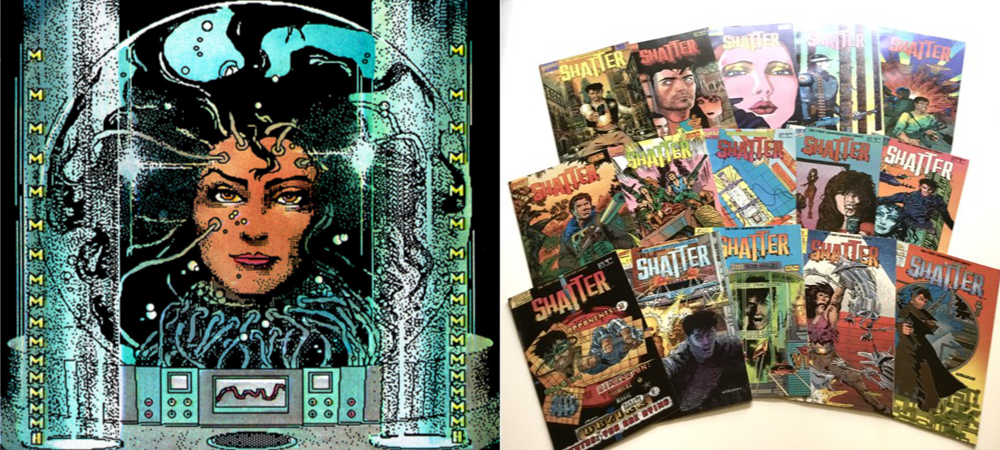

Dots by Any Other Name*
The Story of Shatter, the first Digitally Produced Comic Book
Marin Balabanov

This is an assignment I wrote for university in 2018 about Shatter, a comic book created by Mike Saenz, Peter B. Gillis and Charles Athanas in the mid-1980s on an Apple Macintosh (though with traditional, analog coloring). This milestone of the comics industry started out successfully but ran its course after 14 issues. It paved the way for other digital comics like Das Robot Imperium by Michael Götze, Iron Man: Crash by Mike Saenz and Batman: Digital Justice by Pepe Moreno.
This essay discusses the series, its contents, the process used to create it and its successor comics.
Table of Contents
Abstract: Days of Futures Past
Chapter I. The Subversive Core of Comics
- Chapter Introduction
- How to Draw Comics the Marvel Way
- Drawing from the Underground
- Technology and Art
- No Creative Limits
- Chapter Footnotes
Chapter IV. The Other First Computer Comic
Chapter V. Conclusion: Subversive History, Bright Future
- Chapter Introduction
- The Importance of Shatter as Media Art
- Archiving Shatter for Media Arts Histories
- Learning from Shatter
- Chapter Footnotes
Open Whole Essay on a Single Page
If you like, you can open the essay on a single page. This is not recommended because the navigation is a bit more confusing.
[*] I originally submitted this essay in April 2018
as "Shattered Limitations" for the MediaArtsHistories program at
the Danube University Krems.
» Back to top